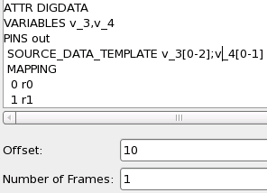
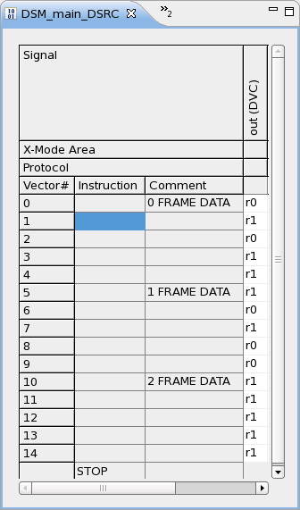
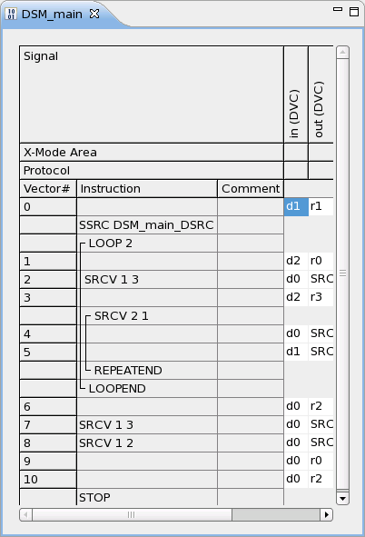
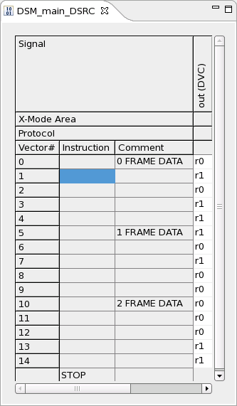

Making use of the Offset parameter
If a DSRC label comprises, say, 10 frame source blocks, it is possible, for example, to modify only the source data of the first two blocks with the VECTOR API by reducing the size of the ARRAY_I array (for which see VECTOR) to 2. But as long as you have only one DSM setup for the DSRC label, you cannot, for example, change only the two frames source blocks 8 and 9. To achieve this, you must introduce a second DSM setup for the DSRC label in question, which specifies an appropriate offset > 0. In the above example, the 10 blocks could be divided between two setups in such a way that the first refers to the first 8 blocks, and the second to the last two blocks. The offset of the second setup would then have to be set to 8. Note that if you define two DSM setups for the same DSRC label, these two setups must fulfill the following requirements:
- Their source data templates must contain the same number of sections, and
- corresponding sections must have the same size.
Example
The following example extends the DSRC label in the first example of Normal DSM setup. It defines a second DSM setup for the DSRC label, sets its offset to 10, and adds one frame source block.
The following two pictures show the second DSM setup and the extended DSRC label:


The next picture shows how the main label could be changed to accommodate the additional frame (you could also increase the number of loop repetitions from 2 to 3):

The following code changes the first three vectors of frame source block 2 from
r1 to
r0:
ARRAY_I down(1);
down[0]=0; //frame source block 2
VECTOR("v3").setVectors(down);The result looks as follows:
